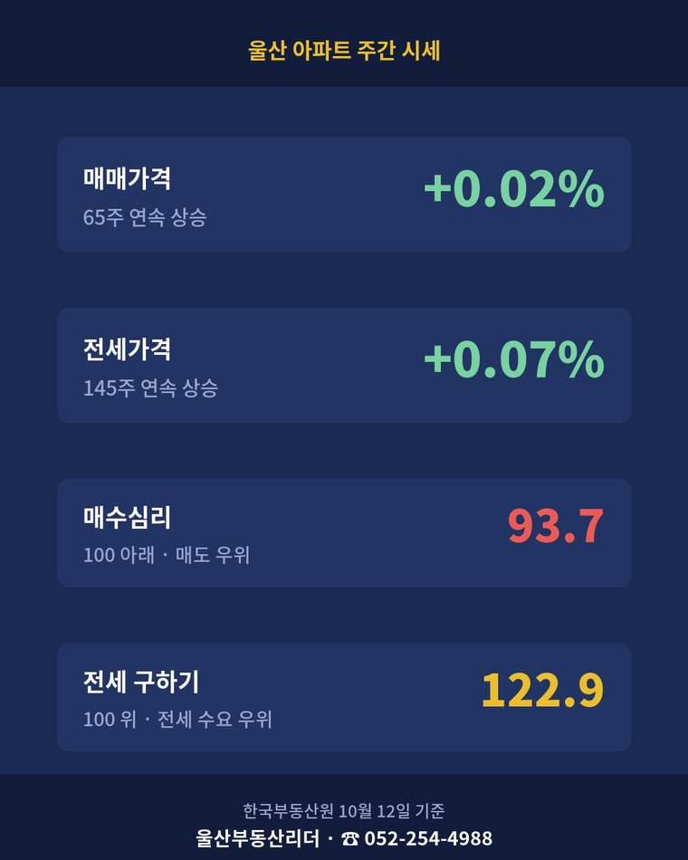
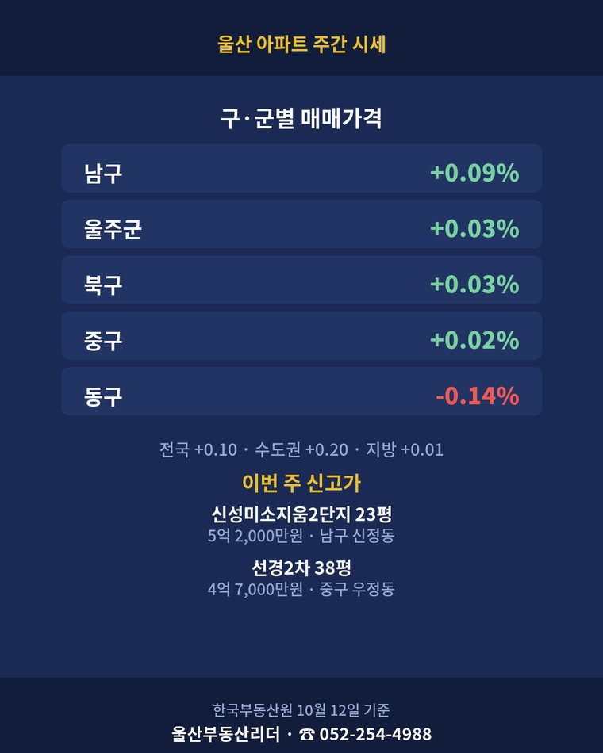
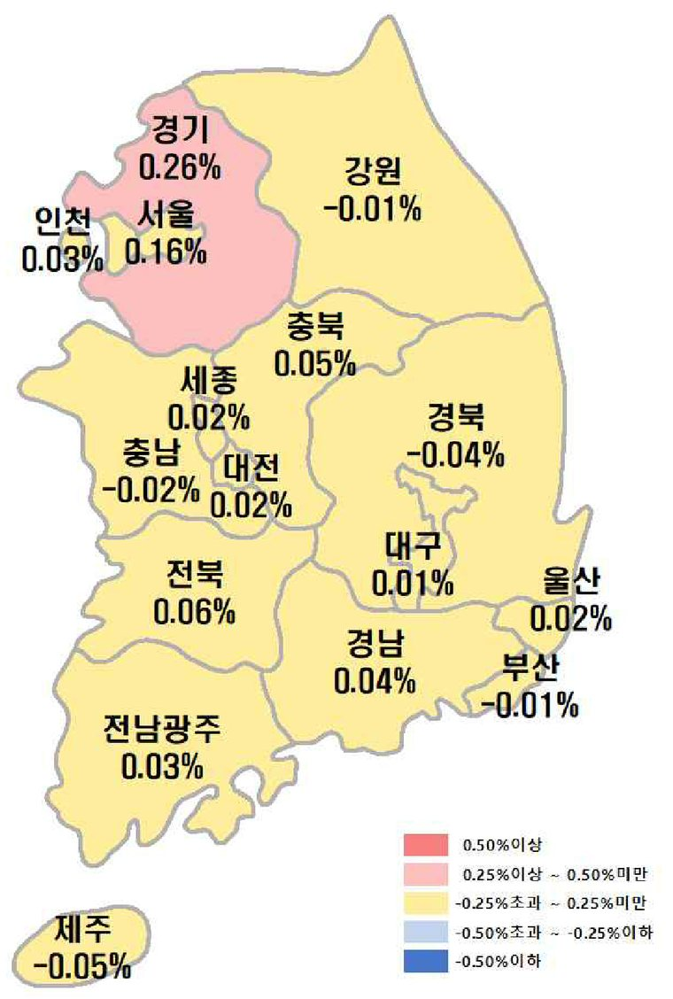

울산 아파트 주간분석 · 한국부동산원
울산 아파트 주간 시세 — 2026년 10월 12일 기준
한 주 동안의 아파트 가격 변동률 · 빨강은 오름, 파랑은 내림 · ◀ ▶ 로 주를 넘기면 지도가 바뀝니다.



시도별 매매가격 변동률 지도 · 자료: 한국부동산원 주간아파트가격동향 보도자료
숫자로 보기
| 지역 | 매매 변동률 | 전세 변동률 |
|---|---|---|
| 울산 | +0.02%65주 연속 상승 | +0.07%145주 연속 상승 |
| 남구 | +0.09% | +0.10% |
| 중구 | +0.02% | +0.06% |
| 북구 | +0.03% | +0.06% |
| 동구 | -0.14% | +0.03% |
| 울주군 | +0.03% | +0.08% |
매매수급지수 93.7 · 전세수급지수 122.9
한국부동산원 주간아파트가격동향(R-ONE 공개 통계)의 지수에서 계산한 한 주 변동률입니다. 수급지수는 100이 기준 — 100보다 낮으면 매도 우위(전세는 공급 우위), 높으면 수요 우위입니다(중개업소 설문으로 본 시장 분위기).
이번 주 공개된 울산 실거래
이번 주 공개 실거래
2026-10-10 ~ 2026-10-16
- 아파트 209건 · 분양권 19건 · 신고가(첫 거래 제외) 10건
- 신고가 — 남구 신정동 신성미소지움2단지 23평 5억 2,000만원 (104.4%)
- 신고가 — 중구 우정동 선경2차 38평 4억 7,000만원 (103.5%)
- 신고가 — 남구 옥동 옥동서광 33평 7억 8,800만원 (100.7%)
구·군별 한눈에
- 남구 · 매매 +0.09%(71주 상승) · 전세 +0.10% · 이번 주 공개 매매 65건 · 가장 비싼 거래 문수로2차IPARK2단지 33평 10억 6,000만원
- 울주군 · 매매 +0.03%(59주 상승) · 전세 +0.08% · 이번 주 공개 매매 35건 · 가장 비싼 거래 문수산동문굿모닝힐 60평 7억 5,000만원
- 북구 · 매매 +0.03%(84주 상승) · 전세 +0.06% · 이번 주 공개 매매 54건 · 가장 비싼 거래 울산송정제일풍경채레이크뷰 33평 6억
- 중구 · 매매 +0.02%(95주 상승) · 전세 +0.06% · 이번 주 공개 매매 31건 · 가장 비싼 거래 번영로센트리지5단지 23평 6억 7,000만원
- 동구 · 매매 -0.14%(13주 하락) · 전세 +0.03% · 이번 주 공개 매매 24건 · 가장 비싼 거래 울산지웰시티자이1단지 33평 6억 1,000만원
- 거래 많은 단지 — 동구 서부동 울산지웰시티자이1단지 4건
- 거래 많은 단지 — 북구 매곡동 오토밸리로효성해링턴플레이스아파트 4건
- 거래 많은 단지 — 동구 동부동 현대패밀리동부 4건
이번 주 공개 전세
79건
- 갱신(종전도 전세) 14건 평균 +6.1% · 계약갱신요구권 사용 9건
그 주에 새로 신고돼 올라온 거래입니다(계약일은 길게는 한 달 전). 신고가 옆 %는 같은 단지·같은 평형의 이전 최고가 대비 · 국토교통부 실거래가.